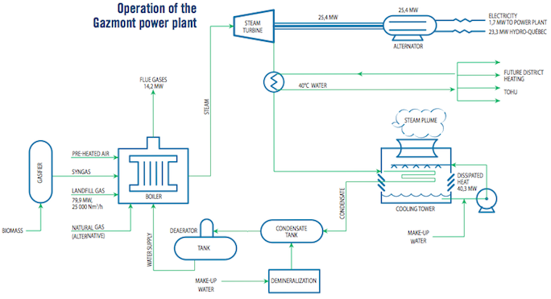

Landfill gas produced by the decomposition of waste materials in the landfill site is captured by a collection system composed of more than 350 wells and brought to the Gazmont plant, where it is burned in a boiler. The energy produced as steam is transformed into mechanical energy which is finally transformed into electrical energy by an alternator. The electricity is delivered to the Hydro-Québec network at a voltage of 25 kV.
At the turbine exhaust, the steam is condensed in two wet-surface condensers to minimize the formation of steam plumes in winter. The condensed steam is recovered and pumped to the dearator, which takes out the dissolved air. It is then returned to the boiler after pre-heating in a heat exchanger.
Operation diagram

Gazmont’s 25 MW plant is the second largest landfill gas-fuelled power plant in Canada. The energy it produces supplies the electricity needs of 10,000 homes. The process used at the Gazmont plant is mainly applicable to large landfill sites, given high capital costs. However, the expertise developed by Gazmont allows the application of other utilization alternatives for smaller sites, such as the combustion of landfill gas in combustion engines.
Environmental benefits
The Gazmont project shows that the control and use of landfill gas can reduce greenhouse gas emissions caused by the decomposition of waste materials and provide a new source of energy which substitutes for the use of traditional fossil fuels.
Utilization of landfill gas at the Gazmont power plant reduces greenhouse gas emissions by about 1 million tons per year. To this day, the plant has accumulated 8 million tons of CO2e in terms of greenhouse gas (GHG) reductions. In 2002, the Gazmont partnership was awarded the ÉcoGESte prize from the government of Quebec for its contribution to reducing the province’s GHG emissions.